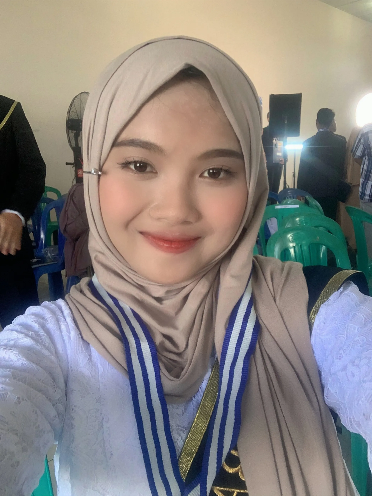
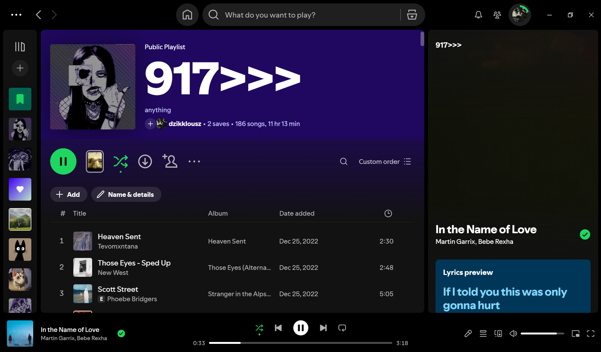

Tanggal 13 Juni 2024, hari Kamis, aku mendapat ucapan selamat dari panitia SNPMB. Artinya aku lolos seleksi SNBT, dan lolos di pilihan 1. Aku bersyukur karena tidak gagal lagi seperti bulan Maret lalu, ketika aku tidak lolos SNBP.
Kenapa Sastra Inggris?
Banyak pertimbangan yang membuatku memilih Sastra Inggris. Berikut dua yang utama:
Orang tuaku tidak menyarankan aku masuk teknik karena kelulusannya dinilai sulit dan IPK tinggi susah didapat.
Hasil Asesmen Minat Bakat menunjukkan aku punya kemampuan verbal.
Pelajaran yang kudapat
Walaupun aku menyukai teknik, aku harus realistis. Nilai UTBK-ku yang paling kecil adalah Kuantitatif. Pelajarannya: be realistic, karena hidup tidak selalu menuruti apa yang kita mau jika itu tidak sesuai dengan kita. Goodbye Teknik Elektro, Welcome Sastra Inggris!
Ringkasan pilihan
Rangkuman jalur dan hasil seleksi
Jalur
Waktu
Hasil
SNBP
Pengumuman 26 Maret 2024
Tidak lolos
SNBT
Ujian 2 Mei, pengumuman 13 Juni 2024
Lolos pilihan 1 (Sastra Inggris)
Graduated
Diposkan pada

Di acara kelulusan dan pelepasan siswa kelas XII.
Tepat tanggal 6 Mei, aku dinyatakan lulus dari SMK Negeri 1 Bakam. Berat menerima kenyataan bahwa aku bukan lagi siswa berseragam putih abu-abu.
Senang dan sedih sekaligus
Perasaanku hari itu bercampur aduk. Senang karena tidak menyangka mendapat gelar lulusan terbaik di kelasku, dan sedih karena status siswa akan berganti menjadi mahasiswa.
Btw, aku tidak lolos SNBP. Tanggal 2 Mei kemarin aku mengikuti SNBT dan lumayan menguras otak. Semoga aku tidak perlu daftar mandiri. Next post, peeps!
Keputusan?
Diposkan pada
Yang dulunya ingin menjadi bagian dari kota pelajar, kini harus mengubur mimpi itu. Aku terpaksa realistis karena kurang percaya diri dengan nilaiku sendiri, dan memilih Universitas terbaik di pulau tercinta ini, yaitu UBB.
Pilihan SNBP
Hari ini, 25 Februari 2024, aku memfinalisasi pendaftaran SNBP:
Pilihan pertama: Teknologi Informasi
Pilihan kedua: Perencanaan Wilayah dan Kota
Untung orang tuaku mendukung, padahal mereka ingin aku kuliah di kota pelajar, Jogja. Tapi kuliah di universitas domisili bukan akhir dari mimpiku. Ini baru permulaan, semoga tanggal 26 Maret 2024 aku mendapat warna biru dan bisa lanjut ke tantangan berikutnya!
Mi Spotify
Diposkan pada

>> milik dzikklousz" width="480" height="281">
Playlist "917>>>" berisi 186 lagu.
Aku suka mendengarkan lagu, jadi kubagikan playlist Spotify-ku di sini. Selera musiknya mungkin random, tapi ini temanku saat belajar dan melamun.